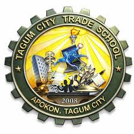
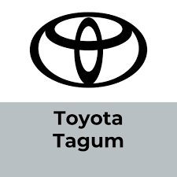
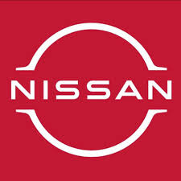
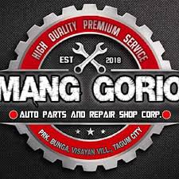
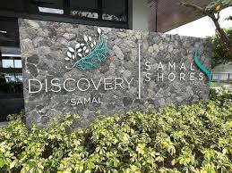
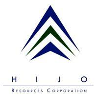
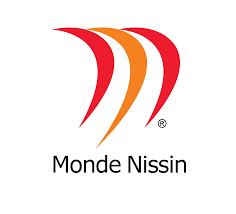

Leading corporations partnering with us to provide real-world exposure, internships, and career opportunities for our graduates.

Tagum National Trade School (TNTS) is a premier public technical-vocational institution in Tagum City, Davao del Norte, established in 1972. It specializes in Senior High School (SHS) Technical-Vocational-Livelihood (TVL) tracks, offering specialized courses like automotive, electronics, food trades, and computer literacy, often acting as a key pilot school for TVE programs in the region.
LYR Lending Corporation, established in 2007, is a Philippines-based lending entity and a business unit of the Tagum-based LYR Group of Companies. It provides secured loans, including business loans, using collateral such as land titles, motor vehicle OR/CR, and certificates of ownership for appliances/furniture
Honda Cars Tagum City is a leading automotive dealership in Tagum City, offering a wide range of Honda vehicles and services to meet the needs of local customers.

Toyota Tagum City is a major automotive dealership located in the capital of Davao del Norte, serving as a primary hub for vehicle sales and services in the region..

Nissan Tagum City is a leading automotive dealership in Tagum City, offering a wide range of Nissan vehicles and services to meet the needs of local customers.

Mang Gorio Auto Parts and Repair Shop Corp in Tagum City is a highly rated automotive service center and parts provider located on Osmeña Street (near Molave Hotel). Known for expert mechanics and honest service, they offer 24/7 towing services and comprehensive repairs, positioning themselves as a trusted local shop.
Kar Asia, Inc. is a major authorized dealer for Mitsubishi Motors in the Davao Region, with its Tagum City branch serving as a key hub for vehicle sales and maintenance in Davao del Norte.
DRMC serves as a major referral center for Davao del Norte and neighboring provinces, offering specialized care across multiple disciplines:

Discovery Samal is Mindanao's premier 5-star luxury resort, featuring expansive views of the Davao Gulf and the largest convention facilities in the region. Located in Barangay Limao, Samal, it offers a high-end escape with 153 lavish villas and suites.

Hijo Resources Corporation (HRC) is a prominent, diversified conglomerate based in Tagum City, Davao del Norte. Established in 1959, it is famous as the pioneer of the Philippine Cavendish banana export industry and has since evolved into a multi-sector enterprise.
Apex Mining Co., Inc. (APX) is a major Philippine gold and silver producer headquartered in Pasig, with primary operations located in Maco, Davao de Oro. Controlled by billionaire Enrique Razon Jr., the company is currently recognized as one of the region's top-performing mining firms.

Monde Nissin Corporation is a global food and beverage giant headquartered in the Philippines, famously known for its market-leading brands like Lucky Me!, SkyFlakes, and Fita. Founded in 1979, it has grown from a small biscuit manufacturer into a public titan listed on the Philippine Stock Exchange under the symbol MONDE.
Interested in becoming a Tagum City College of Science and Technology Inc. partner company? Join our growing network of industry collaborators and help shape the next generation.
Contact Our Partnership Office →